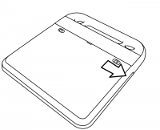
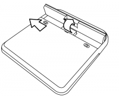

تغيير البطارية
ليست هناك حاجة لتغيير البطارية الا اذا كانت غير صالحة او اذا أصيبت بعطب.مثلا لا تستطيع شحن البطارية، أو ربما تفقد طاقتها بشكل سريع جدا. هنا توجد تعليمات لإزالة عطل البطارية.
إخراج البطارية
- قم بايقاف تشغيل جهاز XO بالذهاب الى النافذة الرئيسية و النقر على أيقونة XO الكبيرة، وثم النقر على غلق الجهاز.
- إغلق الغطاء وقم بقلب الجهاز ليصبح رمز XO في الأسفل.
- قم بدفع زر البطارية الأيمن الى اليمين و الزر الأيسر الى اليسار.

قم برفع البطارية الى الأعلى.
-

قم باعادة تركيب البطارية، المزيد من التفاصيل في فصل شحن البطارية.
الحصول على بطارية جديدة
انظر الى صفحة wiki.laptop.org/go/Directory_of_repair_centers للحصول على معلومات حول
مراكز اصلاح الجهاز، وقم بالسؤال عن بطارية من أجل جهازك.